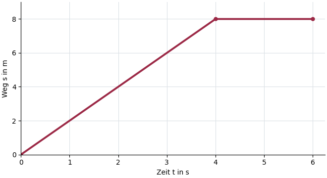

Zeit-Weg-Diagramm
Im Zeit-Weg-Diagramm steht die Zeit t auf der waagrechten Achse, der zurückgelegte Weg s auf der senkrechten. Ein waagrechter Abschnitt bedeutet Stillstand. Eine ansteigende Strecke mit gleichbleibender Steigung steht für eine gleichförmige Bewegung.

Steigung auswerten
Zwischen zwei Punkten im Diagramm liefert die Steigung der Verbindungsgeraden die Durchschnittsgeschwindigkeit. Im ersten Abschnitt des Beispiels beträgt sie .